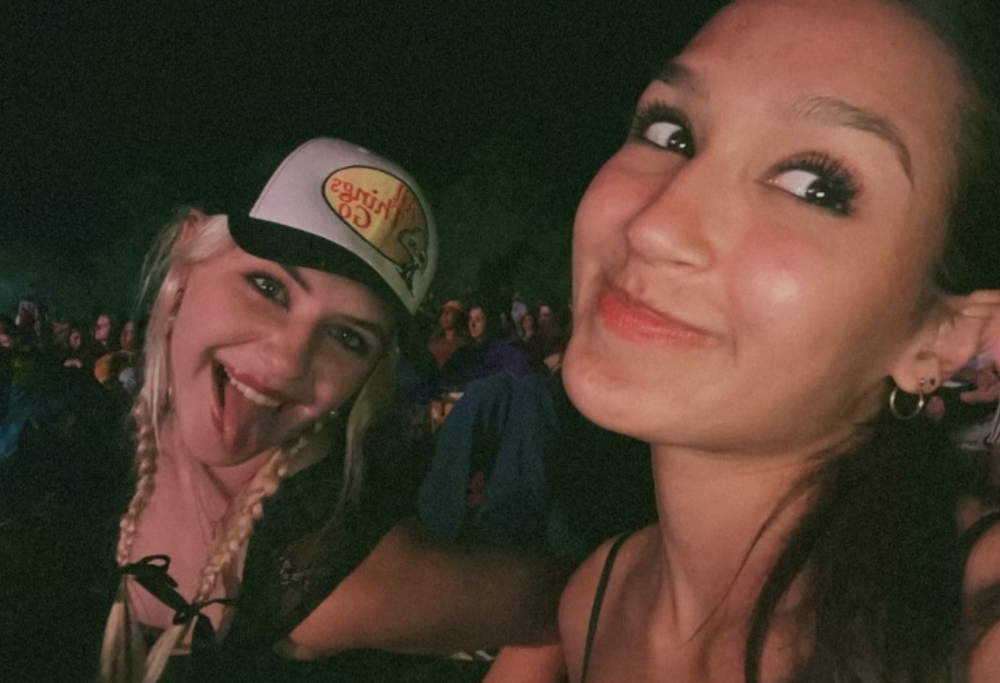

My name is Grace, and I'm the girl on the left of this picture. The girl on the right is one of my best friends, Sonia. This website is dedicated to the things I love, and Sonia is one of those things!
I've lived in Arlington, Virginia for most of my life, but I was born in Michigan, and most of my family still lives there. Northwest Michigan is known for its cherries, so that might be part of the reason I love them.
I read a lot, and have for most of my life. My favorite book of all time is "Strange the Dreamer" by Laini Taylor, which I first read when I was 13. Now, I have a tattoo referencing it, and a heavily annotated copy that lives on my bedside table. If you're interested, you can read the synopsis on GoodReads.
Here are 3 quick fun facts about me!
I am a quadruple gemini.
I am distantly related to a pirate.
I once lost my little brother in a hedge maze! Oops!